Ενημέρωση 31 Οκτ: η νέα σελίδα advonmedia.com/istoselida είναι online από τις 22 Οκτ — τη Δευτέρα 2/11 στρέφω εκεί και τις 8 διαφημίσεις. Τι κάνεις εσύ κάθε μέρα: Εβδομάδα 1 →
ADVON MEDIA · META ADS · NOVEMBER 2026
Launch on Thursday 5 November, 06:00
Everything we made for ads so far, my honest opinion on each piece, what we run, what it costs, what to expect, and the rules I follow every day. Written 22 Oct 2026.
€30 / daystart budget
€900hard cap for November
8 ads5 videos + 3 images
/doreanlanding page (live, pixel works)
1 · What happens between now and 5 November
On 5 November nobody needs to press anything. The campaign is built in Ads Manager with a start time of Thursday 5 Nov, 06:00. Once you say «yes, publish» (any day before), I publish it and it waits, then switches itself on at 06:00.
Enter your ΑΦΜ in Meta billingYOU · 2 min Business Suite → Billing & payments → Advon Media → Business info → Edit → Business name «ΜΕΤΡΙΔΗΣ ΑΓΓΕΛΟΣ - ADVON MEDIA», Tax ID = EL + your ΑΦΜ. Without it Meta adds 24% VAT on every euro (€900 becomes €1,116). Ask Chiotis how he wants the reverse-charge VAT shown.
Say yes or no to 3 small thingsYOU · 1 min (a) the guarantee line «Δεν σας αρέσει το δείγμα; Δεν πληρώνετε τίποτα.» (b) a real monthly limit for scarcity, e.g. «Τον Νοέμβριο αναλαμβάνουμε έως 40 νέες ιστοσελίδες», only if you pick a number you can really build (c) are all 220+ sites really 0€ build? Your «Δωρεάν» image says «Όλες, 0€ κατασκευή». If some older clients paid, I change it to «Σήμερα, 0€ κατασκευή». Details in section 4.
Put the new landing page live: advonmedia.com/istoselidaME · built (22 Oct) · needs 1 deploy = 15 credits, your yes Your website's look, only the website offer: «ΔΩΡΕΑΝ» → 130€ τον χρόνο + ΦΠΑ, paid only when they see the first draft. No Growth package, no extras price list, no monthly switch. «Γιατί είναι δωρεάν;», 36 real client sites, every Google review word for word, steps, FAQ, form + calendar. It matches the ad they clicked: from «Ψυχολόγος;» it says «Για ψυχολόγους», repeats the ad's line, shows psychologists' sites first and fills «Ειδικότητα»; same for dentists and paediatricians. Cookie box on the whole advonmedia.com: Google Analytics + Meta pixel only after «Αποδοχή» (GDPR). Fixed on the way: the old /istoselida form would have filed every lead as spam. Code: branch istoselida-v2 of advon-media-visual; screenshots in _social/ads/nov-launch/landing/. After the deploy I point all 8 ads to /istoselida.
Load all 8 ads into the draftME · 8 of 8 done ✓ All in Ads Manager, all unpublished: campaign «Advon · Dorean · Leads · Νοε 2026», €30/day, ad set «GR · 25+ · Broad · από 5/11» starting 5 Nov, ads 1 (AD1), 2 (B · Pain), 3 («Ψυχολόγος;» video), 4 («Οδοντίατρος;» video), 5 («Παιδίατρος;» video), 6 («Δωρεάν» image), 7 («Έναν.» receipt), 8 («Ψυχολόγος;» image). Each has its 9:16 + 4:5 version, texts, «Learn more» button, its own tracking link (N_psy / N_dent / N_paed for the new three) and every Meta AI «enhancement» off.
Verify Advon Media as advertiserYOU · 5 min, free Ads Manager shows «Verify who's behind your ads before it's required… so that your ads don't pause». Do it once now so nothing pauses in the middle of November: in the ad set, «Ad transparency» → Verify now.
Final check on 4 NovME Test lead on /dorean → shows in your CRM «From the ads» and as a «Lead» in Meta Events Manager → I delete the test lead. Preview every ad on phone (Reels, Stories, Feed). Then I send you one message: «ready, say yes».
Already done and checked today: the ad account (Advon Media 1212936993186625, Visa ··2478), the pixel (1294424308606812, live on /dorean with Lead + Schedule events), the draft campaign «Dorean · Leads · Οκτ 2026» (unpublished, €0 spent), /dorean is live (form → CRM, booking calendar, 220+ / 125+ — Google shows 128 reviews, 5,0 today, so «125+» is true).
2 · My honest verdict on what we have
We have a lot (12 batches, 30+ videos, 9 images). The quality is high. The biggest weakness is not quality, it is sameness: almost everything is the same dark-navy, blue-glow, motion-graphics look with the same Panos voice. Meta's system since 2025 (called «Andromeda») treats ads that look alike as one ad: it shows them to the same kind of people and they tire together. So I picked the strongest of each different idea and added new pieces that look and speak differently.
Creative
Hook (first 3 s)
Offer
Trust
Verdict
AD1 · Panos master 51 s
«Δωρεάν κατασκευή ιστοσελίδας» + allsmiles on laptop. Clear, direct.
Strong: 0€, 10,83€/μήνα, no upfront, changes, <1 h.
220+, 125+, real reviews, form + calendar.
RUN Best «offer» ad. One worry: the ad introduces itself as «Είμαι ο Άγγελος», but the voice is Panos, not you. A prospect who then calls you hears a different person. See section 10.
B · Pain 45 s
«Οι ασθενείς σας σάς ψάχνουν στο Google. Τι βρίσκουν;» Best hook we have: about them, not us.
Same offer, shorter.
Real sites, 213→220+, reviews.
RUN My favourite for cold audiences.
«1 πελάτης» 30 s (37 s)
Opens on a dark, blurry laptop: weak first frame. The maths idea itself is the most unique thing we have.
Best ROI argument (1 client = paid).
Reviews, calendar.
REBUILT I put a new 7-second hook in front, one per profession (psychologists, dentists, paediatricians) → 3 ads.
«1 πελάτης» v6 87 s
Good, but 87 s is long for strangers.
Full maths.
Strong.
LATER For retargeting (people who visited /dorean or watched 50%), from December.
Google test 49 s
«Κάντε ένα μικρό τεστ» is good, but very close to B · Pain.
You already rejected these voices or ideas, or kept them for organic posts.
NOT FOR ADS
3 · The 8 ads we launch with
One campaign, one audience (all of Greece), 8 different-looking ads. Meta gives more money to whichever brings leads cheapest. Each video has a 9:16 version (Reels, Stories) and a 4:5 version (Feed); each image too.
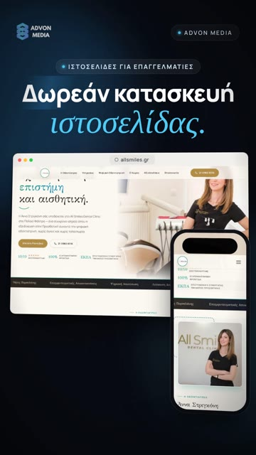
1 · AD1 Panos masterIN ADS MANAGER Offer-first. 51 s.
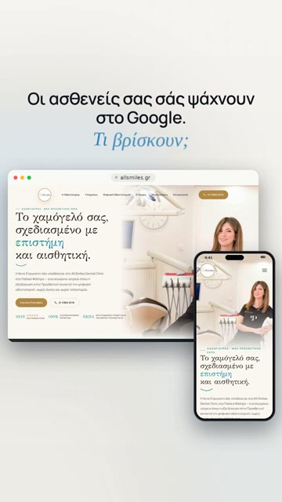
2 · B · PainIN ADS MANAGER «Τι βρίσκουν;» 45 s.
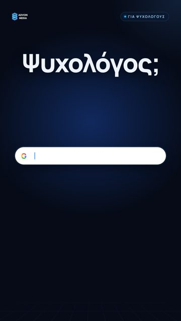
3 · Ψυχολόγος; (1 πελάτης)IN ADS MANAGER New 7 s hook + the 30 s maths ad. ~44 s.
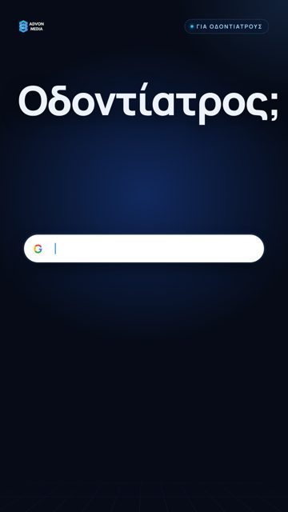
4 · Οδοντίατρος; (1 πελάτης)IN ADS MANAGER Same, for dentists.
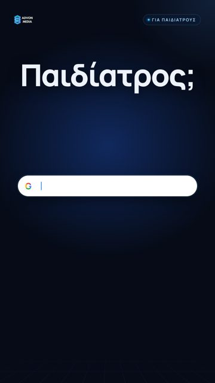
5 · Παιδίατρος; (1 πελάτης)IN ADS MANAGER Same, for paediatricians.
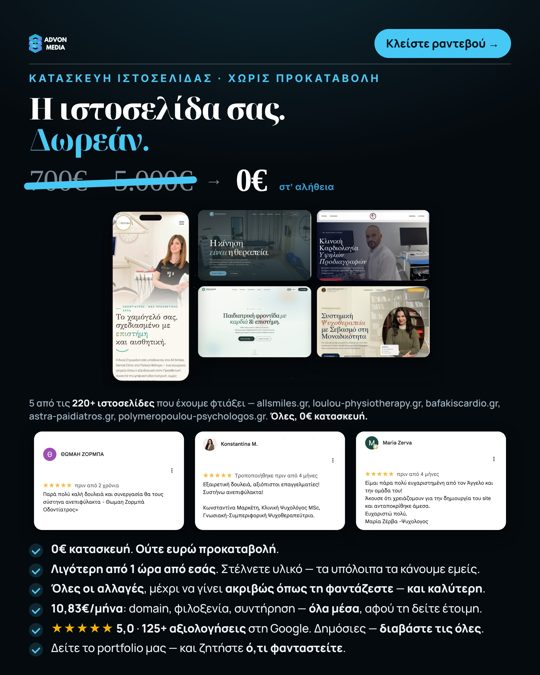
6 · Your «Δωρεάν» imageIN ADS MANAGER Most proof per square cm.
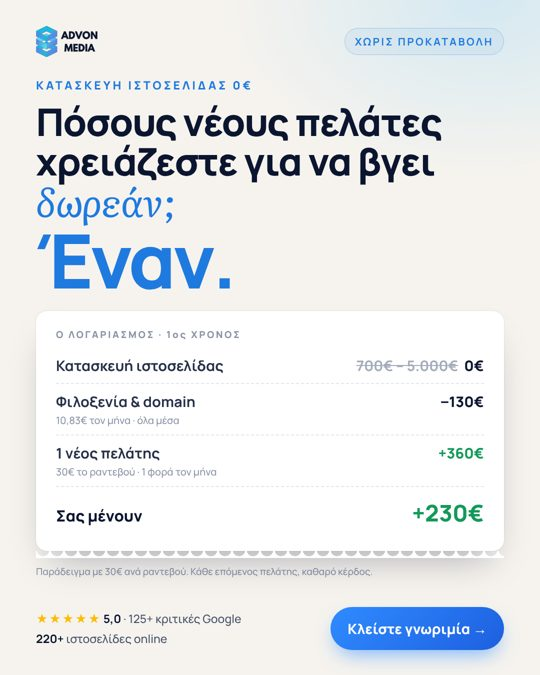
7 · «Έναν.» receiptNEW · IN ADS MANAGER Light, different look. The maths in 3 seconds.
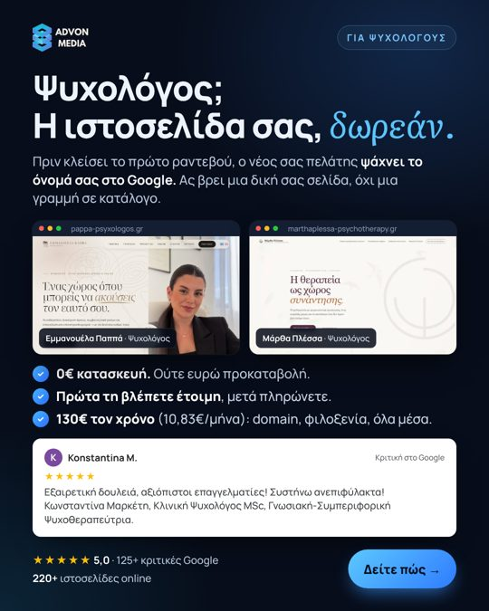
8 · Ψυχολόγος; imageNEW · IN ADS MANAGER Pappa + Plessa sites, a real psychologist's review.
Also made today: «Οδοντίατρος;» image (in reserve)
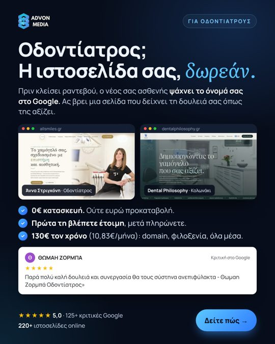
Οδοντίατρος; imageRESERVE allsmiles + Dental Philosophy, Ζορμπά's review word for word.
Reserve bench (swap in from week 3, when an ad gets tired)
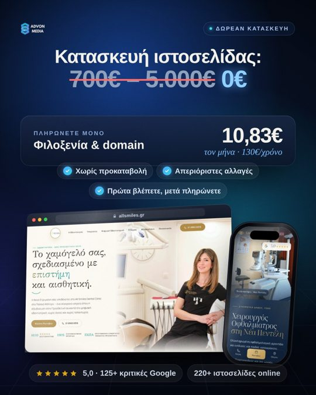
I1 · Price
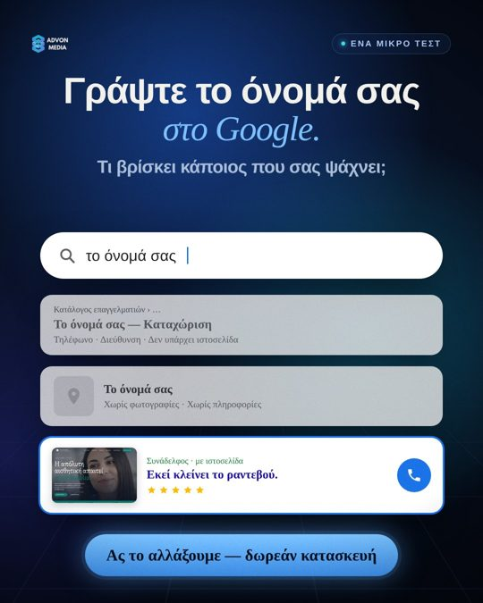
I2 · Google test
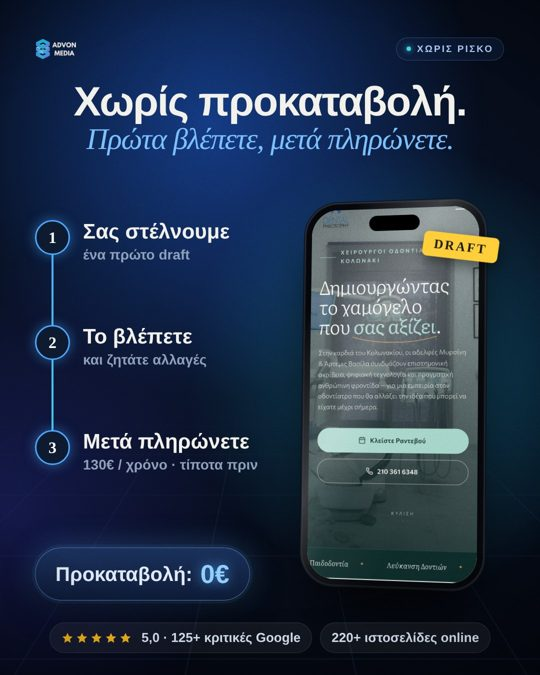
I3 · No upfront
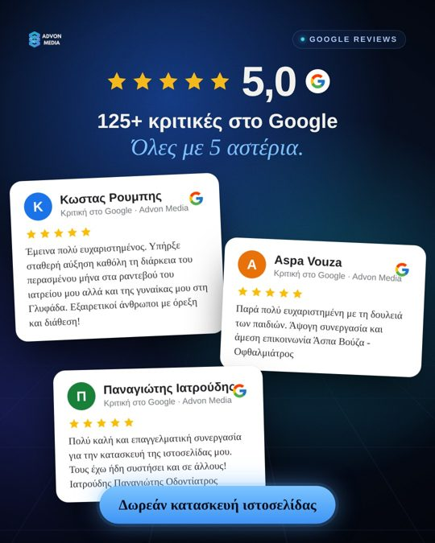
I4 · Reviews
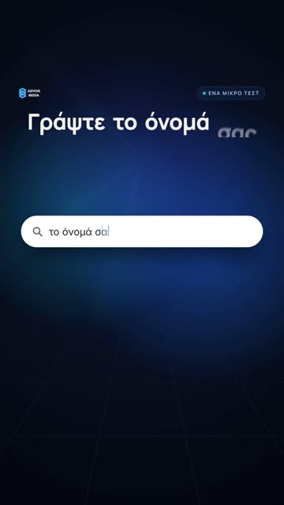
Google test video
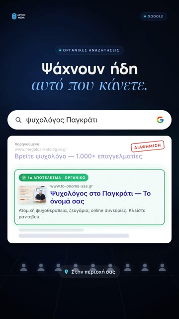
1 πελάτης v6 (87 s) for retargeting
Why the niche versions: a person scrolling stops when the first word is them («Ψυχολόγος;»). It also tells Meta exactly whom to show the ad to. Psychologists first because they convert best for you, then dentists, then paediatricians (your own numbers).
4 · The offer and trust: what is already bulletproof, and 3 upgrades
Already irresistible (keep exactly as is)
0€ build, not one euro upfront
They see the finished site first, then pay
Changes until it is how they imagined it
130€ a year (10,83€/month), domain + hosting, all in
Less than 1 hour of their time
220+ live sites, 125+ reviews, all 5★
3 upgrades I recommend (your yes needed)
Say the guarantee out loud. It is already true, but people do not work it out themselves: «Δεν σας αρέσει το δείγμα; Δεν πληρώνετε τίποτα.» I add it as the last ✓ line in every ad text.
Real scarcity, never fake. You are one person; capacity is real. «Τον Νοέμβριο αναλαμβάνουμε έως Χ νέες ιστοσελίδες» gives a reason to book now. Only with a number you will honour.
Your face or your voice. Greek doctors buy from a person. The single biggest trust jump we can still make: 20 seconds of you on your phone, or your own voice (ElevenLabs can copy it from a 2-minute recording) instead of Panos saying «Είμαι ο Άγγελος».
Honesty checks I already did: 125+ reviews (Google shows 128 today ✓) · 220+ sites ✓ · 4–10 days to first draft (same as /dorean) ✓ · all reviews shown are real and word for word ✓ · no music, voice only ✓ · the «700€–5.000€» strike-through is the normal market price range, it is fine. Only open question: «Όλες, 0€ κατασκευή» (to-do 2c).
Who sees these ads
In the settings: all of Greece, 25+, no interests. Meta no longer lets advertisers pick professions like «doctor» or «psychologist», so the ads choose the people: the texts name them («γιατρούς, ψυχολόγους και επαγγελματίες», «Ψυχολόγος;», «Οδοντίατρος;», «Παιδίατρος;»), Meta learns from who fills the form, and the /dorean form asks the profession so you see it before you call.
Who we want: health professionals first (psychologists, dentists, doctors of every specialty, paediatricians, physios, dietitians), then other professionals (lawyers, accountants). Not shops or restaurants.
Conversions API (Meta's «17.8% lower cost» suggestion): free, one click, can be switched off anytime. It re-sends the events your pixel already sees from Meta's side, so fewer leads get lost in browsers that block tracking. Expect a small gain, not 18% (that's Meta's average). Recommended, after your yes.
5 · Exactly how the campaign is set up in Ads Manager
Setting
Value
Why
Ad account
Advon Media (1212936993186625). Never the personal «Angelos Metridis» account.
Website → pixel 1294424308606812 → event Lead (form sent on /dorean)
Meta looks for people who fill the form, not people who just click.
Schedule
Start Thu 5 Nov 2026, early morning (set to 06:00; Meta shows GMT+3, and Greece moves to GMT+2 on 25 Oct, so it may start at 05:00 Athens time), no end date
Thursday start = 2 working days to check before the weekend.
Audience
Greece · age 25+ (the highest minimum age Meta allows with Advantage+) · all languages · Advantage+ audience (no interests)
The ads themselves pick the people (psychologist hook → psychologists). Interests make it worse in 2026.
Placements
Advantage+ (Facebook, Instagram, Threads, Audience Network). 9:16 video for Reels/Stories, 4:5 for Feed.
In this campaign type Meta only lets you exclude Audience Network at account level (Advertising settings). Optional: say yes and I switch it off there; it mostly brings accidental clicks from games/apps.
Identity
Page «Advon Media» + Instagram @advon_media
Button
Μάθετε περισσότερα
The videos say it out loud.
Link
advonmedia.com/dorean/ + UTM per ad (utm_content = ad name)
Your CRM sees which ad brought each lead.
Meta's automatic «creative enhancements»
All OFF, especially «Add music», «Text improvements», «Visual touch-ups»
Meta adds background music by default. You never want music.
Account spending limit
€900
Safety net: ads stop by themselves at €900.
6 · Budget and what to expect in November
Days
Budget
Condition
5–11 Nov
€30/day (≈ €210)
Don't touch. Meta is learning.
12–18 Nov
€36/day
Only if a lead costs ≤ €12 and leads pick up the phone. Otherwise stay at €30 and swap ads.
19–30 Nov
€43/day
Same condition, again +20%. (Meta's own limit on your account today is €45.88/day; it rises as you spend.)
Total
≈ €800–900, never above the €900 cap
My estimate (to be replaced by real numbers on day 7)
Weaker
Likely
Strong
Cost per lead
€15
€11
€8
Leads (€850)
~57
~77
~106
Meetings (if called within 10 min)
~26 (45%)
~42 (55%)
~64 (60%)
Yes (ad leads close a bit lower than your cold calls)
~9 (35%)
~17 (40%)
~29 (45%)
First-year cash at €130
~€1.2k
~€2.2k
~€3.8k
Cost per new client
~€94
~€50
~€29
Even the weaker case pays back inside the first year if clients renew once (2 × €130 = €260 per €94 spent), before any extras (forms, articles, social media, Google Ads). These are estimates, not promises: the two unknowns are cost per lead and how many leads answer the phone. November measures both.
7 · The rules I follow every day (so you don't have to look at Ads Manager)
Days 1–3: I only check that leads arrive in your CRM and are real people (not spam). I change nothing: every edit restarts Meta's learning.
Day 7 (Thu 12 Nov): any ad that spent €40 with 0 leads is turned off. Any ad Meta barely spent on stays (Meta already judged it).
Raise only if a lead costs ≤ €12 for 3 days in a row and leads book meetings: +20% (never more at once).
If a lead costs more than €25 after €150 spent: no raise; I swap 2 ads for 2 from the reserve bench.
Day 14 (Thu 19 Nov): the real score is cost per booked meeting (from your CRM): under €25 great · €25–40 OK · over €40 = change the hook or the landing page before spending more.
Never edit a running ad. To change something I add a new ad next to it.
Every Monday you get one short message: spent, leads, cost per lead, meetings, yes, and what I changed. Any budget change outside these rules = I ask you first.
8 · When a lead comes in (this decides half of the result)
Call within 10 minutes. A lead called in 5–10 minutes books far more often than one called the next day: they just filled the form and still remember why. Ad leads will arrive while you are in meetings, so keep short gaps between calls to phone them back. If you can't call, send this Viber/SMS immediately and call within the hour:
Καλησπέρα [όνομα], είμαι ο Άγγελος από την Advon Media. Είδα ότι ενδιαφέρεστε για την ιστοσελίδα σας. Σας καλώ σε λίγα λεπτά για να σας πω πώς δουλεύουμε, ή πείτε μου ποια ώρα σας βολεύει.
They will also ask in the comments («Πόσο κοστίζει;», «Ποιο είναι το κόλπο;»). Unanswered comments hurt trust. Short honest answer: «Η κατασκευή είναι 0€. Πληρώνετε μόνο φιλοξενία + domain, 130€ τον χρόνο, και μόνο αφού δείτε τη σελίδα σας έτοιμη. Στείλτε μας μήνυμα και σας εξηγούμε.»
9 · Ad texts (copy-paste ready)
The same link for all, only the last part changes per ad: https://advonmedia.com/dorean/?utm_source=meta&utm_medium=paid&utm_campaign=dorean_nov26&utm_content=AD-NAME
Ads 1, 6 · AD1 master + «Δωρεάν» image
Δωρεάν κατασκευή ιστοσελίδας.
Στην Advon Media φτιάχνουμε ιστοσελίδες για γιατρούς, ψυχολόγους και επαγγελματίες, και την κατασκευή δεν τη χρεώνουμε.
✓ Πληρώνετε μόνο φιλοξενία και domain: 130€ τον χρόνο (10,83€ τον μήνα)
✓ Χωρίς προκαταβολή: πρώτα βλέπετε τη σελίδα σας έτοιμη, μετά πληρώνετε
✓ Όσες αλλαγές θέλετε, μέχρι να είναι όπως τη φανταστήκατε
✓ 220+ ιστοσελίδες online · 125+ κριτικές 5★ στο Google
✓ Λιγότερο από 1 ώρα από εσάς, τα υπόλοιπα τα αναλαμβάνουμε εμείς
Συμπληρώστε τη φόρμα ή κλείστε online ραντεβού, χωρίς καμία δέσμευση.
Headline: Δωρεάν κατασκευή ιστοσελίδας · Description: Χωρίς προκαταβολή · 130€ τον χρόνο
Ad 2 · B · Pain
Οι ασθενείς σας σάς ψάχνουν στο Google. Τι βρίσκουν;
Αν δεν βρίσκουν μια δική σας ιστοσελίδα, βρίσκουν κάποιον άλλο. Εμείς τη φτιάχνουμε, και την κατασκευή δεν τη χρεώνουμε.
✓ Πληρώνετε μόνο φιλοξενία και domain: 130€ τον χρόνο (10,83€ τον μήνα)
✓ Χωρίς προκαταβολή: πρώτα βλέπετε τη σελίδα σας έτοιμη, μετά πληρώνετε
✓ Όσες αλλαγές θέλετε, μέχρι να είναι όπως τη φανταστήκατε
✓ 220+ ιστοσελίδες online · 125+ κριτικές 5★ στο Google
Πατήστε «Μάθετε περισσότερα», αφήστε το τηλέφωνό σας και σας καλούμε εμείς.
Headline: Ιστοσελίδα για γιατρούς, κατασκευή 0€ · Description: Χωρίς προκαταβολή · 130€ τον χρόνο
Ads 3, 8 · Ψυχολόγος; (video + image)
Ψυχολόγος; Πριν κλείσει το πρώτο ραντεβού, ο νέος σας πελάτης ψάχνει το όνομά σας στο Google.
Αν βρει μια δική σας ιστοσελίδα, με εσάς, την προσέγγισή σας και τις υπηρεσίες σας, κλείνει ραντεβού πιο εύκολα. Αν βρει μόνο μια γραμμή σε κατάλογο, συνεχίζει να ψάχνει.
Στην Advon Media φτιάχνουμε ιστοσελίδες για ψυχολόγους και ψυχοθεραπευτές, και την κατασκευή δεν τη χρεώνουμε.
✓ 0€ κατασκευή, ούτε ευρώ προκαταβολή
✓ Πρώτα βλέπετε τη σελίδα σας έτοιμη, μετά πληρώνετε
✓ Όσες αλλαγές θέλετε, μέχρι να είναι όπως τη φανταστήκατε
✓ 130€ τον χρόνο (10,83€ τον μήνα): domain, φιλοξενία, όλα μέσα
✓ 220+ ιστοσελίδες online · 125+ κριτικές 5★ στο Google
Ένας νέος πελάτης τον χρόνο αρκεί για να την έχετε ήδη πληρώσει.
Κλείστε μια σύντομη γνωριμία, χωρίς καμία δέσμευση.
Headline: Ιστοσελίδα για ψυχολόγους, κατασκευή 0€ · Description: Χωρίς προκαταβολή · 130€ τον χρόνο
Ad 4 · Οδοντίατρος;
Οδοντίατρος; Πριν κλείσει ραντεβού, ο νέος σας ασθενής ψάχνει το όνομά σας στο Google.
Αν βρει μια δική σας ιστοσελίδα, με το ιατρείο, τις θεραπείες και τις κριτικές σας, κλείνει ραντεβού πιο εύκολα. Αν βρει μόνο μια γραμμή σε κατάλογο, συνεχίζει να ψάχνει.
Στην Advon Media φτιάχνουμε ιστοσελίδες για οδοντιάτρους, και την κατασκευή δεν τη χρεώνουμε.
✓ 0€ κατασκευή, ούτε ευρώ προκαταβολή
✓ Πρώτα βλέπετε τη σελίδα σας έτοιμη, μετά πληρώνετε
✓ Όσες αλλαγές θέλετε, μέχρι να είναι όπως τη φανταστήκατε
✓ 130€ τον χρόνο (10,83€ τον μήνα): domain, φιλοξενία, όλα μέσα
✓ 220+ ιστοσελίδες online · 125+ κριτικές 5★ στο Google
Ένας νέος ασθενής τον χρόνο αρκεί για να την έχετε ήδη πληρώσει.
Κλείστε μια σύντομη γνωριμία, χωρίς καμία δέσμευση.
Headline: Ιστοσελίδα για οδοντιάτρους, κατασκευή 0€ · Description: Χωρίς προκαταβολή · 130€ τον χρόνο
Ad 5 · Παιδίατρος;
Παιδίατρος; Πριν κλείσει ραντεβού, κάθε γονιός ψάχνει πρώτα το όνομά σας στο Google.
Αν βρει μια δική σας ιστοσελίδα, με εσάς, το ιατρείο και τις υπηρεσίες σας, νιώθει σιγουριά και κλείνει ραντεβού. Αν βρει μόνο μια γραμμή σε κατάλογο, συνεχίζει να ψάχνει.
Στην Advon Media φτιάχνουμε ιστοσελίδες για παιδιάτρους, και την κατασκευή δεν τη χρεώνουμε.
✓ 0€ κατασκευή, ούτε ευρώ προκαταβολή
✓ Πρώτα βλέπετε τη σελίδα σας έτοιμη, μετά πληρώνετε
✓ Όσες αλλαγές θέλετε, μέχρι να είναι όπως τη φανταστήκατε
✓ 130€ τον χρόνο (10,83€ τον μήνα): domain, φιλοξενία, όλα μέσα
✓ 220+ ιστοσελίδες online · 125+ κριτικές 5★ στο Google
Κλείστε μια σύντομη γνωριμία, χωρίς καμία δέσμευση.
Headline: Ιστοσελίδα για παιδιάτρους, κατασκευή 0€ · Description: Χωρίς προκαταβολή · 130€ τον χρόνο
Ad 7 · «Έναν.» receipt image
Πόσους νέους πελάτες χρειάζεστε για να σας βγει δωρεάν μια ιστοσελίδα; Έναν.
Η κατασκευή κοστίζει 0€. Πληρώνετε μόνο φιλοξενία και domain: 130€ τον χρόνο (10,83€ τον μήνα).
Ένας νέος πελάτης, 30€ το ραντεβού, μία φορά τον μήνα: 360€ τον χρόνο. Η ιστοσελίδα έχει πληρωθεί, και κάθε επόμενος πελάτης είναι κέρδος.
✓ Χωρίς προκαταβολή: πρώτα τη βλέπετε έτοιμη, μετά πληρώνετε
✓ Όσες αλλαγές θέλετε, μέχρι να είναι όπως τη φανταστήκατε
✓ 220+ ιστοσελίδες online · 125+ κριτικές 5★ στο Google
Κλείστε μια σύντομη γνωριμία, χωρίς καμία δέσμευση.
Headline: 1 πελάτης τον χρόνο αρκεί · Description: Δωρεάν κατασκευή · 130€ τον χρόνο
If you say yes to the guarantee, every text gets one more line before the last sentence: «✓ Δεν σας αρέσει το δείγμα; Δεν πληρώνετε τίποτα.»
10 · New creatives I'd make next (week 2–3), in order
You, 20 seconds, on your phone. No studio. «Είμαι ο Άγγελος από την Advon Media. Φτιάχνουμε ιστοσελίδες για γιατρούς και ψυχολόγους, και την κατασκευή δεν τη χρεώνουμε…» Real face beats everything else for trust with Greek professionals. I cut it, add captions, and put proof around it.
Your own voice instead of Panos. Record 2 minutes of you reading any text calmly; ElevenLabs copies your voice. Then every ad that says «Είμαι ο Άγγελος» is actually you, and the person on the phone sounds like the ad.
A happy client, 15 seconds. One psychologist or dentist saying on her phone why she chose you. Ask the 3–4 who left the warmest reviews. This is the strongest proof format there is.
Real Google proof. A screen recording: «ψυχολόγος Παλλήνη» in Google → your client's site at the top. I can find which client sites rank first from Search Console.
More niche hooks once we see which profession wins: φυσικοθεραπευτές, διαιτολόγοι, λογοθεραπευτές (all already in your lead lists).
Made for this launch with ElevenLabs (your account, Eleven v4, Greek, Panos): 3 hook lines, 2 takes each, ≈105 credits. No music anywhere.